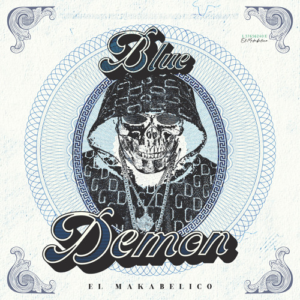

Nicolas
Edad: 12 años
Pasatiempo: Me gusta estar en la computadora
Musica:Escucho de todo un poco
Deporte:me gusta mucho el skate
Favoritos:Drake, Cris MJ & Makabelico
Top Canciones
| # | Canción | Artista | Portada |
|---|---|---|---|
| 1 | Pido Mucho | Kepo | |
| 2 | Tate Quiera | ROA |  |
| 3 | Blue Demon | Comando Exclusivo |  |